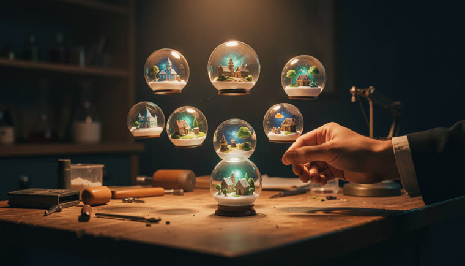
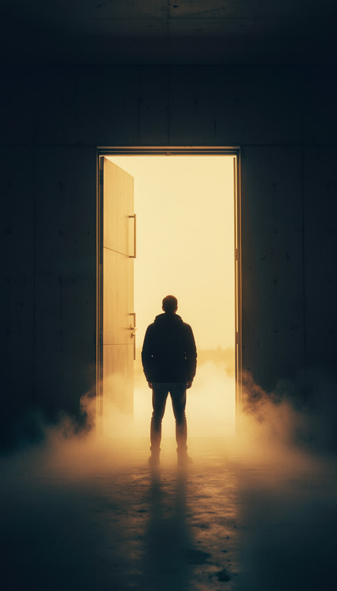

Local INEMA pipeline: transcribes the source video, rewrites the script in PT-BR, generates images in inemaimg, animates the hooks in Agnes, narrates in inemavox, renders in HyperFrames, and delivers on Telegram.
The first case was the video "GPT-6 Astra Doesn't Need Your Instructions Anymore", by Nate B. Jones (06/09/2026). It produced a complete video in two formats and three reels, all with an INEMA.CLUB CTA and credit to the original analysis.
Clean transcript with timestamps, thesis, chapters, and the 8 key points from the source video. The script starts there, not from a generic summary.
47 scenes generated in flux2-klein at 1344×768 (16:9) and 768×1344 (9:16). No cropping horizontal footage to make it vertical.
The opening scenes become image-to-video clips in Agnes (keyframes A→B). The rest gets Ken Burns and crossfade in HyperFrames.
Web versions (compressed). The high-resolution masters stay in the local output folder. Based on Nate B. Jones’s analysis.
"AGI arrived" not because of a benchmark, but because we passed the point where we give the method to the machine. The trigger is GPT-6 Astra, the first "super agent": it reasons across different kinds of work, sees the screen, uses software, recovers from errors, keeps context for days, and makes decisions without asking.
Everything runs locally on the INEMA machine. A single script file (scripts/roteiro.json) drives the narration, on-screen text, and composition, and the actual duration of each WAV controls the timing.
Full-bleed with Ken Burns and real crossfade (alternating tracks 5/6). Permanent scrim ensures text readability.
An 8-second Agnes video overlaid on the image in the hook scenes, with a fade to the still. Animate the wrapper, never the <video>.
Kicker, Sora title with amber highlight, staggered lists, counter, large number in list reels. Safe zones in 9:16.
Local services in the INEMA ecosystem. No paid API key.
Image server (flux2-klein) on port 8000.
curl -s localhost:8000/healthLocal TTS. The rachel voice runs via tts_direct.py with the engine chatterbox-vc.
ls ~/projetos/timesmkt3/media/voice-refs/rachel.wavNode 22+, ffmpeg, headless Chrome; Agnes key in agnes-nei/.env.
npx hyperframes doctorWork in ~/projetos/output/<nome>/. The commands below are from the repository.
The skill /watch downloads it, extracts frames, and captures the subtitles. The clean transcript becomes the basis for the analysis.
python3 watch.py "https://www.youtube.com/watch?v=..." --detail balanced --max-frames 40
Each scene has img, kicker, tela (short HTML) and fala (spoken form, numbers spelled out). Then generate the narration txt files.
python3 tools/escrever_txt.py # roteiro.json → <vídeo>/assets/txt/sN.txt + SCRIPT.md
Prompts in English, prose, no text in the image. Idempotent: delete a PNG to regenerate with a different seed.
python3 tools/prompts.py && python3 tools/gen_img.py img/prompts.json img
One 8-second clip per video, keyframes A→B (B is A with a dolly-in via ffmpeg). Real limit: 6 requests per minute.
python3 tools/agnes_clip.py clips/jobs.json
Run the tts_direct.py from inemavox in its own scope and measures the duration and volume of each WAV (a failure is clearly reported if it comes out silent).
python3 tools/narrar_vc.py principal # idem reel1 reel2 reel3
O build.mjs writes the index.html from HyperFrames; render.sh waits for the narration, runs lint, and renders at high resolution.
node build.mjs --video principal --vertical bash scripts/render.sh principal reel1 reel2 reel3
Text and videos go to @inemav3bot. Above 49 MB, send a compressed copy and keep the master intact.
python3 tools/enviar.py video reel1/reel1-9x16.mp4 "legenda" 1080x1920
Descriptive prose, amber and teal light, no text. All 47 were generated in about 6 s each with flux2-klein.


What already exists and what’s missing to become a factory.